|
|
|
|
|Instituto Tecnológico de Costa Rica|Escuela de Matemática| M. Sc. Geovanni Figueroa M. |
|
|
Ecuaciones diferenciales exactas
Primero debemos retomar algunos conceptos de cálculo vectorial.
Ejemplo
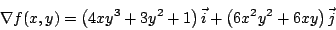
Ejemplo
La definición anterior no es muy útil al tratar de verificar que un campo vectorial es conservativo, pues involucra el hallar una función potencial. El siguiente teorema nos facilitará esta tarea.
De paso este teorema nos da la clave para construir la función potencial, como veremos en el próximo ejemplo. Ejemplo
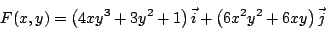
es conservativo, pues si
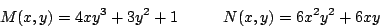
tenemos que
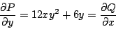
Como es conservativo, existe una función escalar
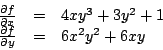
de donde, como
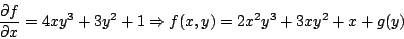
Derivando con respecto a
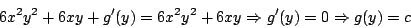
Con lo cual 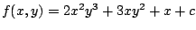.
Observación: algunas veces resulta más fácil integrar respecto a
Demostración:
Comprobemos que es solución de la ecuación
diferencial. Suponiendo que
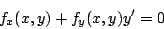
Como
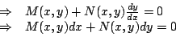
Como se quería.
Ejemplo
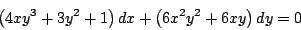
es 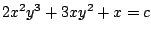, pues la ecuación diferencial es exacta y como hemos visto es la función potencial del campo vectorial 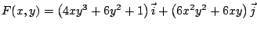.
Ejemplo
Determine una función de modo que la ecuación diferencial
sea exacta. Para que la ecuación diferencial (1.1) sea exacta debe cumplirse que
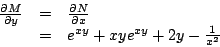
Y al integrar respecto a
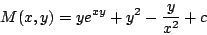
Observación: en realidad obtenemos toda una familia de funciones , debido a la constante de
integración
Ejemplo
Determine el valor o valores de
Para que la ecuación diferencial (1.2) sea exacta debe satisfacer
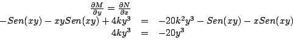
de donde obtenemos que
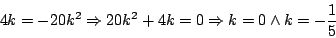
Subsecciones
|